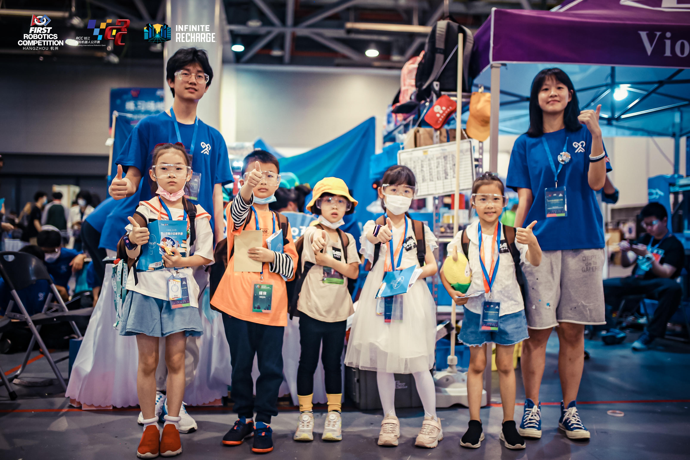

Sept 2023 - Present
First Robotics Competition (FRC)
Vice President, technician
Responsible for the robotics coding (in Java) more than two years.
Led the team to the Chairman’s Award (the most prestigious award in FRC) for the China Region.
Conducted online and in-person coding and technician tutorials for younger students.
Served as a core member of the translation team for the official document webpage.

Java
Python
Robotics